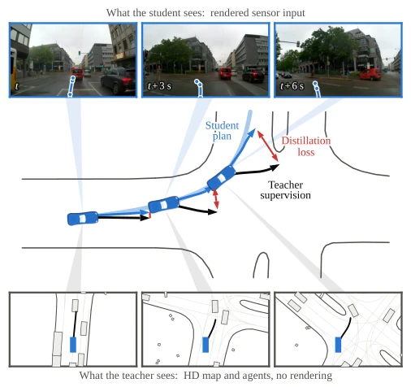
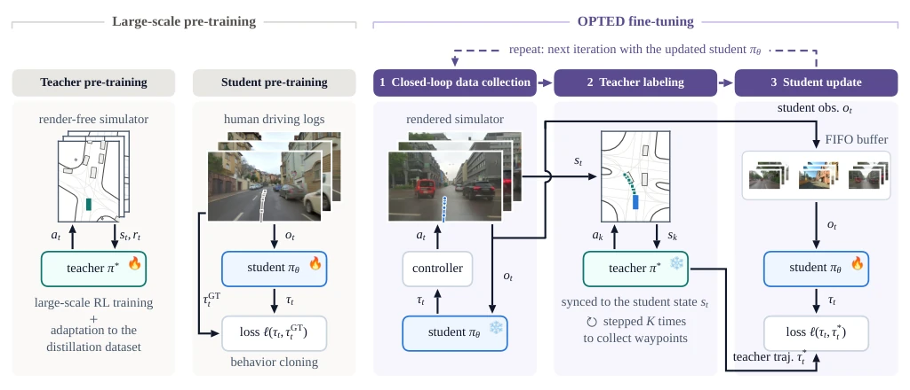
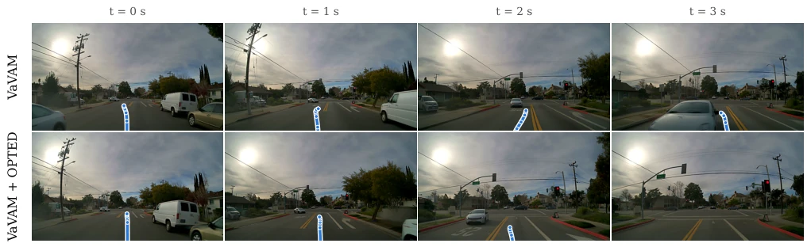
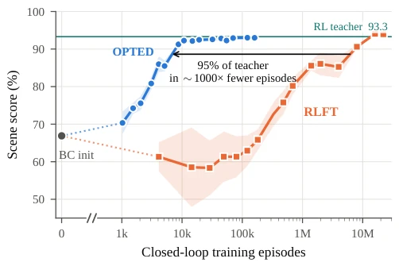

This paper employs a 'borrowing a knife to kill a man' strategy. Since end-to-end (E2E) models are prone to errors in closed-loop deployment, and directly applying reinforcement learning (RL) is too costly in rendering hardware, the authors simply decouple 'exploration' and 'execution'. The privileged Teacher (Teacher) undergoes RL training in a vector simulator without rendering, while the Student (Student) runs in a photorealistic simulator, with the Teacher solely responsible for 'guiding the way'. This tactic proves effective, with VaVAM scores surging 9.5-fold, but essentially it remains distillation, with a perception gap (image vs. vector) between Teacher and Student. Although efficiency significantly outperforms direct RL, the Teacher's own generalization capability becomes a bottleneck. Moreover, this method relies on 3DGS scene reconstruction, questioning whether it counts as 'pseudo-realism'? In summary, it is a clever engineering trick, but theoretical depth is somewhat thin; in the future, if the Teacher is stronger, the Student's upper limit will be higher.
End-to-end driving policy pretraining is typically based on Behavior Cloning (BC), but this is merely open-loop supervision; errors accumulate during closed-loop deployment, leading to Out-of-Distribution (OOD) risks [6]. Although direct closed-loop RL optimization can solve this, sensor policies require high-fidelity rendering, incurring extremely high computational costs [8]. Existing closed-loop supervised fine-tuning (e.g., RoaD [11]) relies on human logs; after policy drift, supervision signals become biased. Furthermore, RL policies typically output actions, while E2E outputs trajectories, resulting in representation mismatch [1]-[3]. Therefore, how to introduce RL's closed-loop capability at low cost while retaining E2E's human priors becomes a key pain point. Existing work like LEAD [2] attempts distillation, but typically shares simulators, limiting scalability.

Fig. 1: OPTED. A pre-trained end-to-end student is rolled out in closed loop in a sensor-based simulator (top: the rendered views the student consumes). At visited states, a privileged teacher, trained with reinforcement learning (RL) on vectorized HD-map observations in a render-free simulator (bottom), provides the student’s distillation target. Rendered interaction is limited to the end-to-end model, while RL exploration, which is computa- tionally infeasible with rendering, is confined to the render-free simulator.
The core of OPTED is decoupling RL exploration and E2E fine-tuning. The Pipeline consists of three steps: 1. Teacher Pretraining: Train the privileged Teacher using PPO in the PufferDrive [19] vector simulator, inputting HD-map and agent boxes, without rendering. 2. Student Fine-tuning: Pretrained E2E Student (e.g., TransFuser [2]) runs in closed-loop on AlpaSim [17]. 3. Distillation Sync: States visited by the Student are synchronized to the Teacher simulator; the Teacher generates trajectories as targets, and the Student learns via KL divergence or L1 loss. The key innovation lies in the state synchronization mechanism, allowing interaction between different simulators. Loss functions adapt to Student outputs (actions or trajectories). After freezing, the Teacher is used only for label generation, avoiding RL exploration under rendering overhead. Additionally, Teacher reward design includes dense path progress, ensuring smooth driving.

Fig. 2: The OPTED pipeline. Large-scale pre-training produces the privileged teacher trained with RL in a render-free simulator on vectorized states (HD-map polylines and actor bounding boxes), subsequently adapted with further RL training to the distillation dataset. The end-to-end student is trained in open loop via behavior cloning on images recorded from human demonstrations, regressing its plan τt onto the logged trajectory τ GT t . OPTED fine-tuning then runs three steps iteratively. (1) The student drives the rendered simulator in closed loop: it receives frame ot, predicts τt, and the controller converts the plan into the action at that advances the simulator. (2) Each visited state is synchronized into the vectorized simulator, where the frozen teacher is stepped K times to produc
Tested on AlpaSim + NuRec [18] with TransFuser and VaVAM [3]. Metrics include Scene Score, km/infr, ADE. OPTED raised LTFv6 scores from 26.5 to 41.8, and VaVAM from 3.9 to 37.1. Compared to RoaD [11] and direct RLFT, OPTED reached Teacher performance on WOMD [20] with only 6.8k interactions, whereas RLFT required 6.2M (3 orders of magnitude difference). Ablation shows Teacher design (dense reward vs. sparse) affects Student comfort. The conclusion is that OPTED significantly improves closed-loop capability while maintaining human priors. Additionally, generalization was verified on the AlpaSim Challenge leaderboard, outperforming some VLA models.

Fig. 3: Qualitative results of closed-loop rollouts in AlpaSim. Top: the base VaVAM fails to stay in its lane while approaching an intersection and collides with an oncoming vehicle. Bottom: VaVAM after OPTED reaches the intersection and correctly stops at the red traffic light.
其他图片Other Figures

Fig. 5: Sample efficiency of OPTED against RL fine-tuning (RLFT), both initialized from the same BC-pre-trained action student. Scene score on the WOMD test split against closed-loop episodes consumed during training. The arrow spans the episodes needed to reach 95% of the teacher’s scene score: 6.8k for OPTED vs. 6.2M for RLFT.